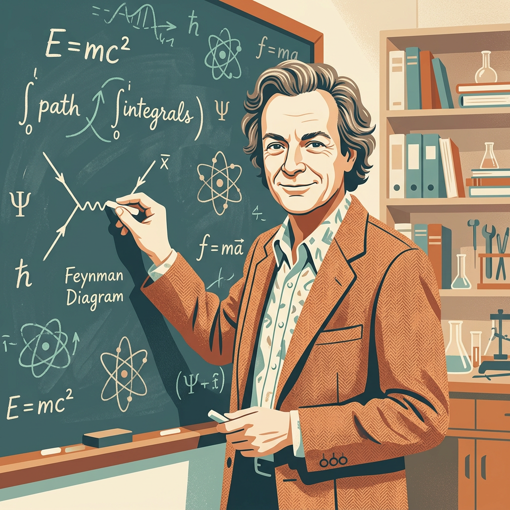
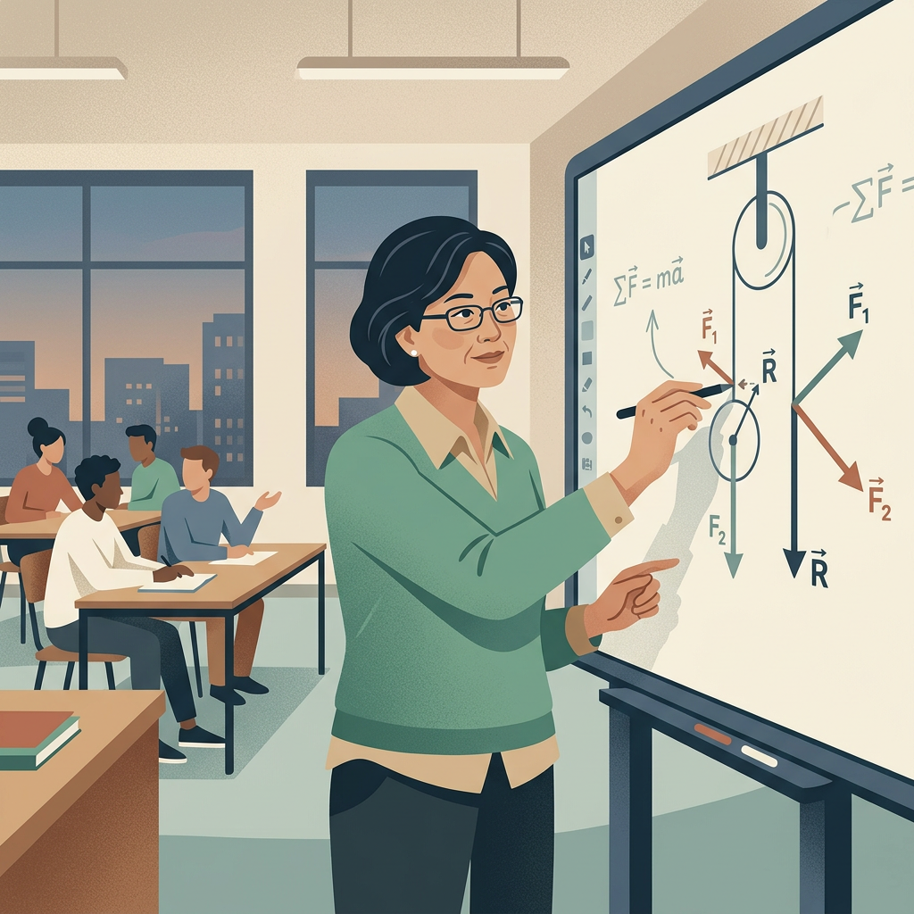
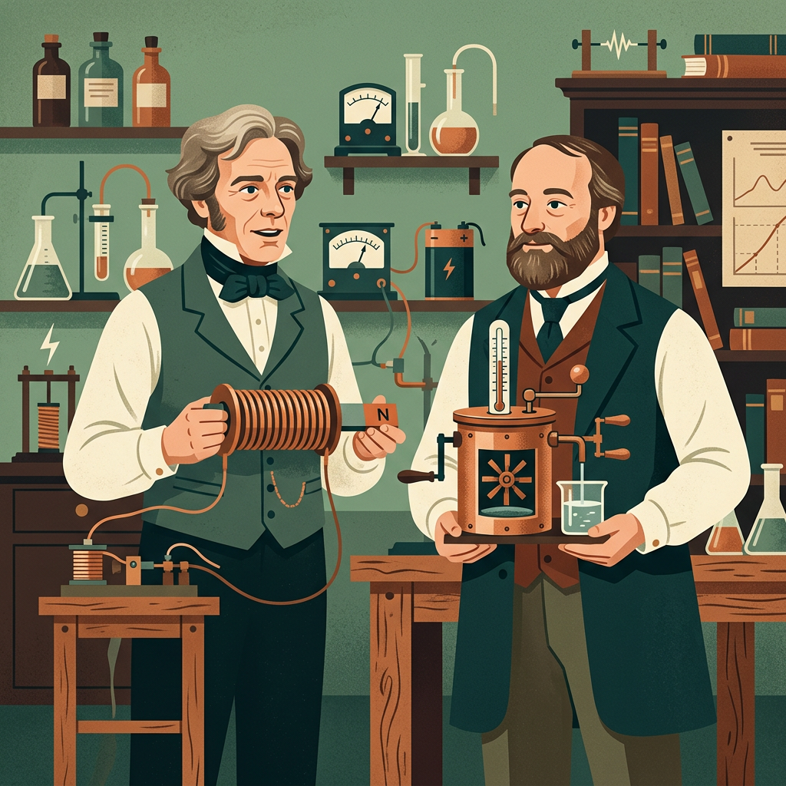
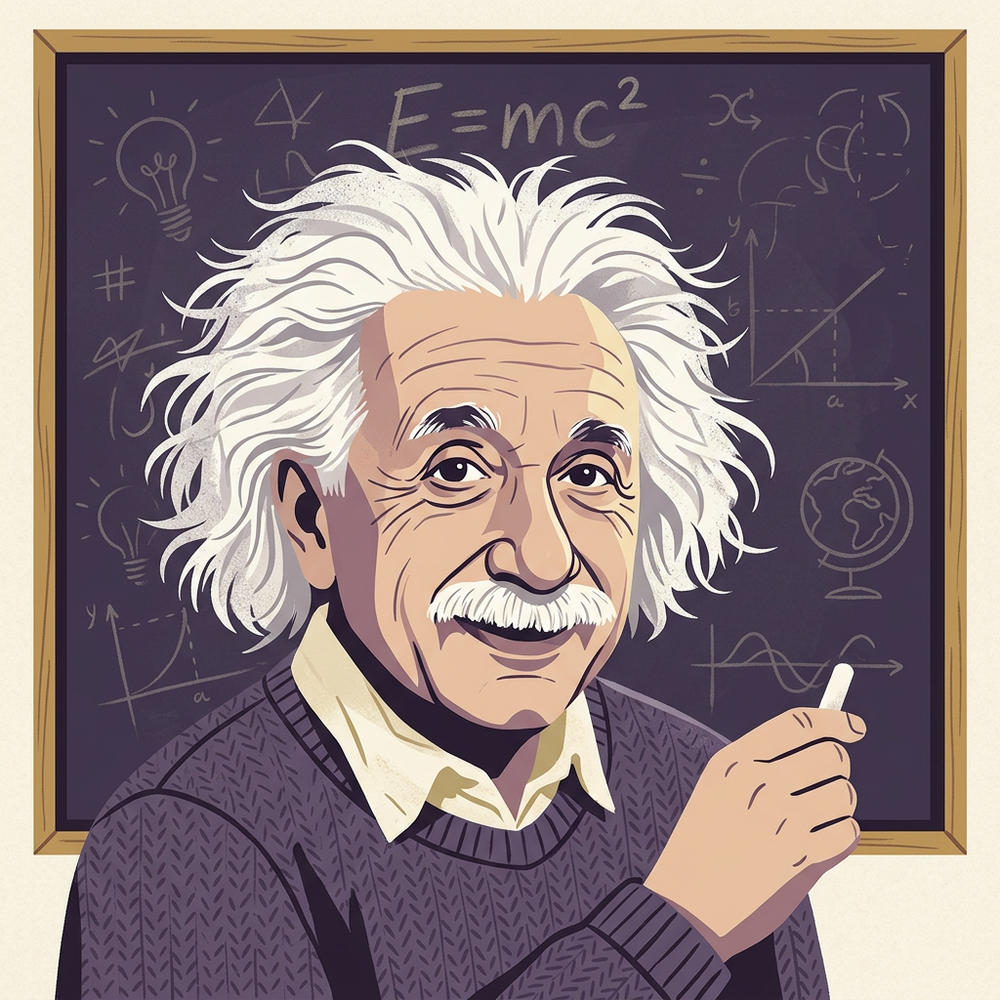
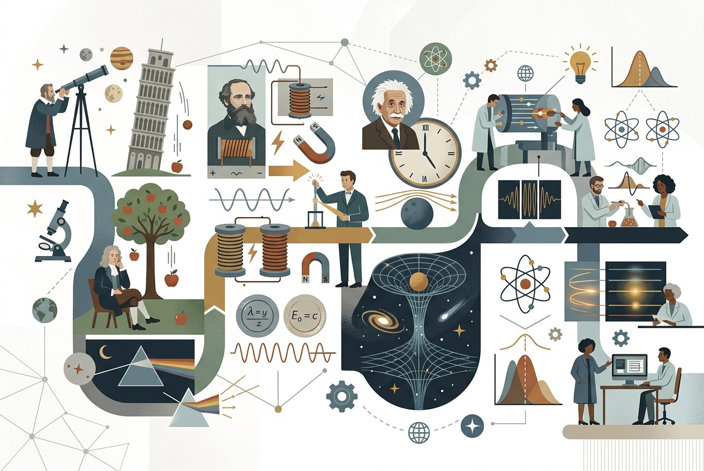
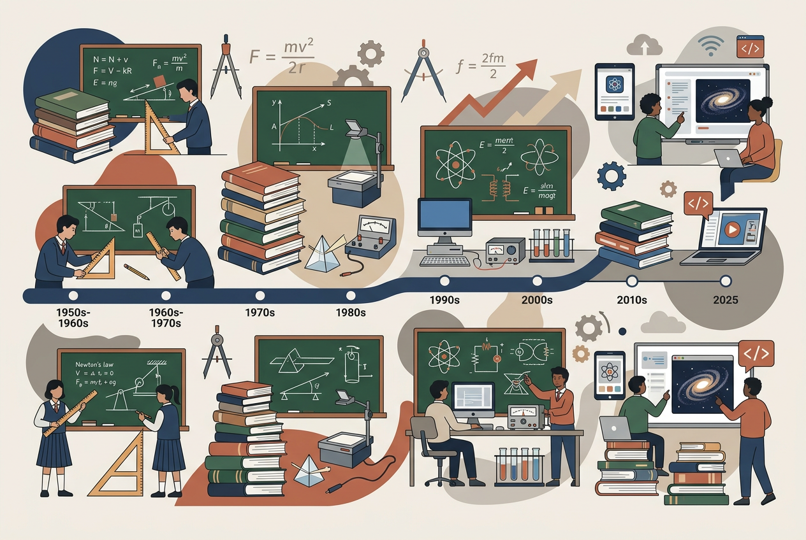
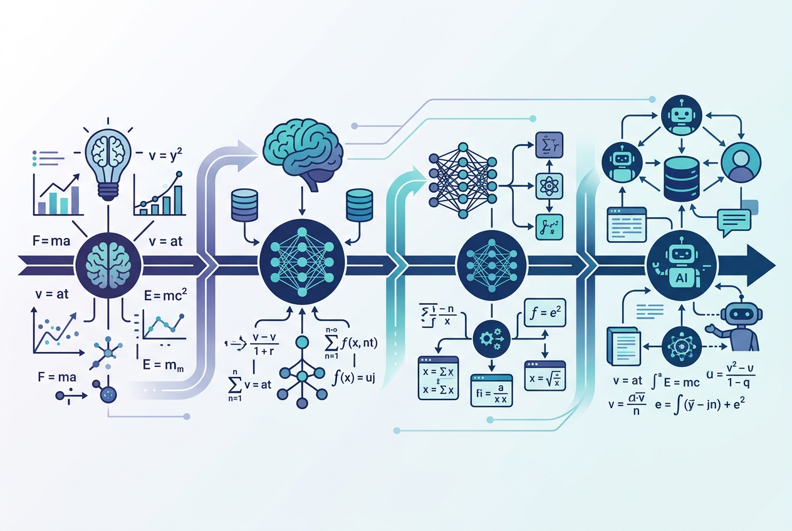

由三类科学技能协同驱动：AI学术（academic-research-writer，IEEE 规范综述）、AI费曼（ai-feynman-evolution/-system/-future/-practical/-research + feynman-perspective）、AI科学（causal-context，因果推断与反事实检验）。对 63 条 S/A/B 信源（约 1279 万字级）做深度提炼。
S28 原始凭证A11 权威认证B17 专业解读反事实 −41%命名≠理解单一维度不足以支撑可信教学：无学术则无根，无费曼则无懂，无科学则无证，无进化则无新。
以 IEEE 规范综述组织论证，所有论断标注信源等级（S/A/B）与溯源链。提供"有根据"。
academic-research-writer阶段进化分析 + 前瞻路线图 + 持续进化系统 + "命名≠理解/反自欺/具象化"审视。提供"真理解"。
ai-feynman-5 + feynman-perspective因果图抽取、后门/前门识别、Rung-3 反事实检验，避免把相关误读为因果。提供"说得清因果"。
causal-context信源经 SOURCES_RANKED 七规则校验（溯源链 / 多源交叉 / 时效 / 可复现 / 引用图 / 评审透明 / B级强制注释）。
零噪声、可复现、可溯源到官方：双课标（moe/enjoyphysics）、人教社+国家平台教材（pep/smartedu/scnu）、PhET 仿真、东北师大实验范式研究、APS/IOP 教研。
同行评议/正式出版：aps.org/prper、iop.org/physed、cnki.net、science/nature/pnas、springer、semanticscholar 引用图。
须强制标注 S/A 溯源，禁独立作教学依据：bilibili（王超群/北师大）、zhihu、3blue1brown、veritasium。溯源失败即剔除。

费曼检验：你能否不用术语，向六年级生解释清楚？不能即"货物崇拜"——只记住了名字。
会写 F=ma 却解释不了"为何加速需力持续作用"。还原：松手购物车因摩擦慢停，非力"用完"——力产生加速度，非变成速度。
"光滑斜面用守恒、传送带分类讨论"成模式匹配。还原：能量仅保守场守恒，传送带摩擦生热故机械能不守恒。
"电流是定向移动"背得熟却画不出回路图景。反自欺：能否解释"0℃冰仍有内能"？不能即假理解。
| 模板 | 操作 | 物理示例 |
|---|---|---|
| ①生活现象导入 | 从学生见过的现象起，禁直接公式 | 筷子水中弯折→折射 |
| ②极端推想 | 推到极端显本质 | 冰面无限光滑→永动→惯性 |
| ③角色扮演 | 让物理量"说话" | 电荷："我被电场推着跑" |
| ④类比+边界 | 给类比必附失效点 | 山坡高度=电势（但电势无方向） |
| ⑤因果链口述 | 逼说"因为…所以…" | 磁通变→感应电 |
| ⑥反向提问 | AI扮六年级生追问 | feynman-tutor 模式 |
| ⑦重建命名 | 机制走通后才给术语 | 学生自"发明"近名再对齐 |
用 causal-context 对"信源等级→教学可信度"做因果推断，避免把"用了S级成绩好"误读为因果。
S→T +0.62，T→U +0.71，U→C +0.58，未溯源 B 对 T 削弱 −0.34。总链 S→C ≈ 0.255（链式相乘）。
若缺失 S 仅用 B：对照 C=0.78 → 反事实 C=0.46，下降 41%（蒙特卡洛 1万次，超确定性阈值 25%）。
改噪声分布结论稳健(39–43%)；用极小 SCM 代理，效应量为结构化估计非 RCT。方向性结论稳健。
力学 / 电学 / 热学 / 光学 四域均验证：假理解发生在"命名早于机制"处；高可信度依赖 S级+PhET；误差沿 S→T→U→C 放大。
牛顿第一定律：冰壶推到极端"无摩擦→永匀"→力非维持运动而是改变运动。边界：惯性只由质量定。信源：pep + phet + aps/prper。
闭合电路欧姆：电源如水泵抽电荷，内阻如漏损。边界：电荷漂移慢但信号近光速。B级未溯源尤多，T降达0.38。
热：温度=平均动能标尺，0℃冰仍有内能。光：折射如方阵斜入泥地转向，全反射无折射。源：pep + phet + 3b1b(溯arxiv)。
每例：假理解 → 机制还原 → 边界。可直接嵌入备课模板"费曼层"栏作自检题库。
| # | 概念 | 假理解 | 机制还原 | 边界 |
|---|---|---|---|---|
| 1 | 惯性 | 速度快惯性大 | 保持原状态的倾向，只由质量定 | 匀速与静止惯性同 |
| 2 | 重力加速度 | 重的落得快 | a=g 与质量无关，空气阻力是差异源 | 真空才严格成立 |
| 3 | 作用力反作用 | 相互抵消 | 作用在不同物体，不能相加 | 平衡力才抵消(同体) |
| 4 | 功 | 用力就做功 | W=Fs·cosθ，无力向位移则零 | 提包水平走不做功 |
| 5 | 功率 | 大则做功多 | P=W/t，是快慢非总量 | 大功短时总功或更小 |
| 6 | 压强 | 力大压强大 | p=F/S，面积分摊 | 钉尖/坦克履带 |
| 7 | 浮力 | 魔法 | 排开液体重力 | 死海因ρ液大 |
| 8 | 杠杆 | 长的省力 | 力臂×力平衡，非杆长 | 支点在端时杆长=力臂 |
| 9 | 欧姆定律 | R随U变 | R是导体属性，U/I是量度 | 超额定烧断(非线性) |
| 10 | 焦耳定律 | 热效应总有害 | Q=I²Rt，可利可害 | 超导零损 |
| 11 | 电磁感应 | 有磁场就有电 | 磁通变化才生电 | 稳恒磁场不感生 |
| 12 | 电势 | 高即能量大 | 单位电荷势能，标量 | 零点人为选 |
| 13 | 电容 | 越多越好 | C=Q/U，容纳能力属性 | 超耐压击穿 |
| 14 | 折射 | 光在水中弯 | 介质光速变→队伍转向 | 全反射无折射 |
| 15 | 光电效应 | 光强易出电子 | 看频率是否过截止 | 红外再强也不出 |
ai-feynman-evolution-system 迁移到物理教育：多源监控 → 渐进/突破/自适应进化 → 日报/周报/月报。
费曼官网监控→教育部/人教社课标教材更新；学术文献监控→CNKI/APS/arXiv(physics-ed)；技术更新监控→PhET版本、国家平台、AI辅导工具。
渐进式：课标微调→同步馆内章节；突破式：2025修订→重构 L2/L3；自适应：依用户(教师/学生/教研员)反馈调深度。
把三维方法压缩为每课可填模板，是本文最落地产物。
【课题】______________
【学术层】权威根：课标(___) + 教材页(___) + 仿真(___)
补充A：教研(___) 禁用B：未溯源(___)
【费曼层】机制铺垫：__(不引入术语的直觉活动)__
命名时机：__(何时给公式/术语)__
类比边界：__(类比何处失效)__
自检四步：重述/举例/边界/溯源 —— 实测漏洞：___
【科学层】决策：S保障(✓/✗) → A补偿(✓/✗) → B已溯源(✓/✗)
预期C ≈ f(S,A,B)=___
【进化层】反馈：学生卡点___ → 触发馆内重构(✓/待)物理教育的不只是公式，更是人与历史的传承。下图串起学科史、本土脉络与 AI 进化三段进程。





三维协同深潜馆 · 由 AI学术(academic-research-writer) × AI费曼(ai-feynman-5 + feynman-perspective) × AI科学(causal-context) 驱动 · 信源见 SOURCES_RANKED · 完整 3万字长文见 三维深度总结
⚠️ oneshot 闭源资产 · 仅限本地使用 · 禁止上传网络